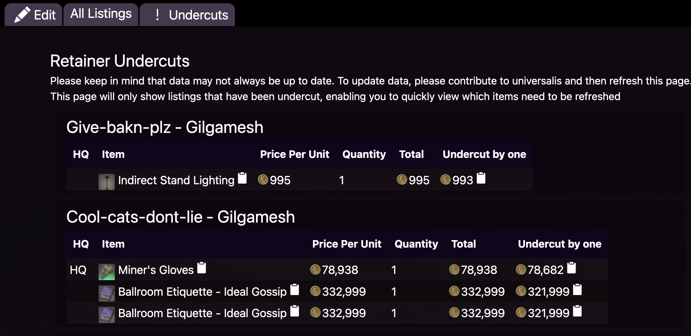
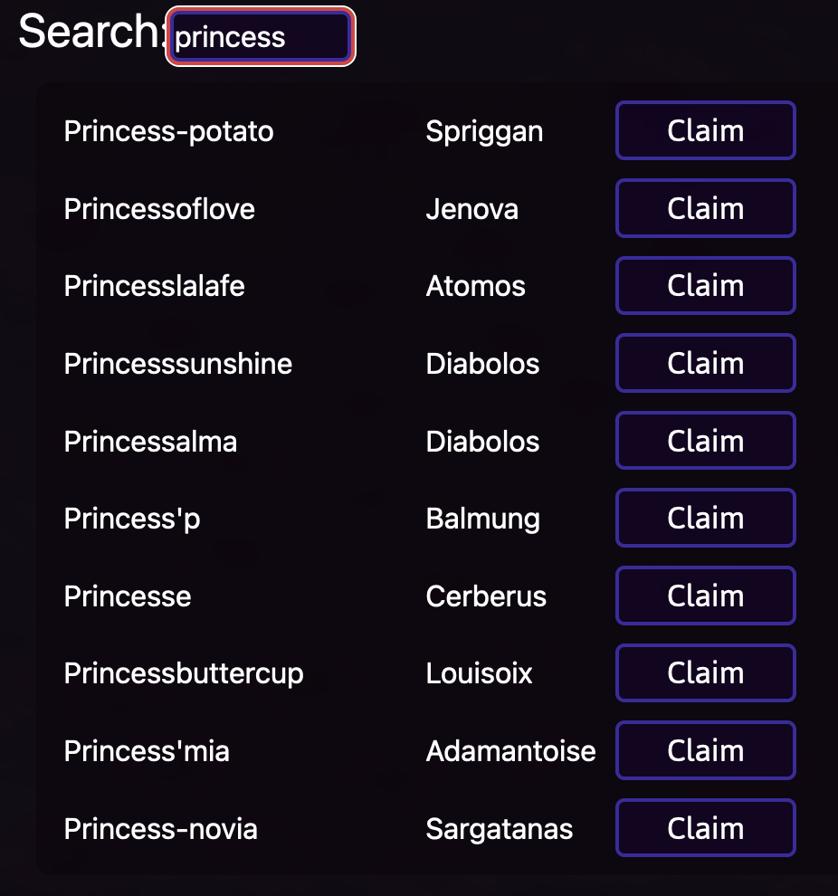
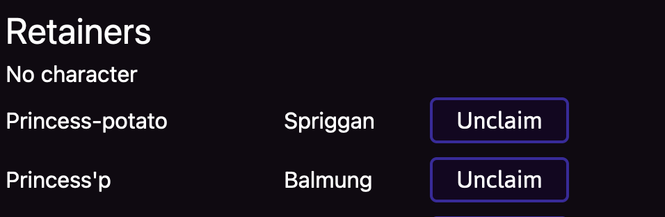
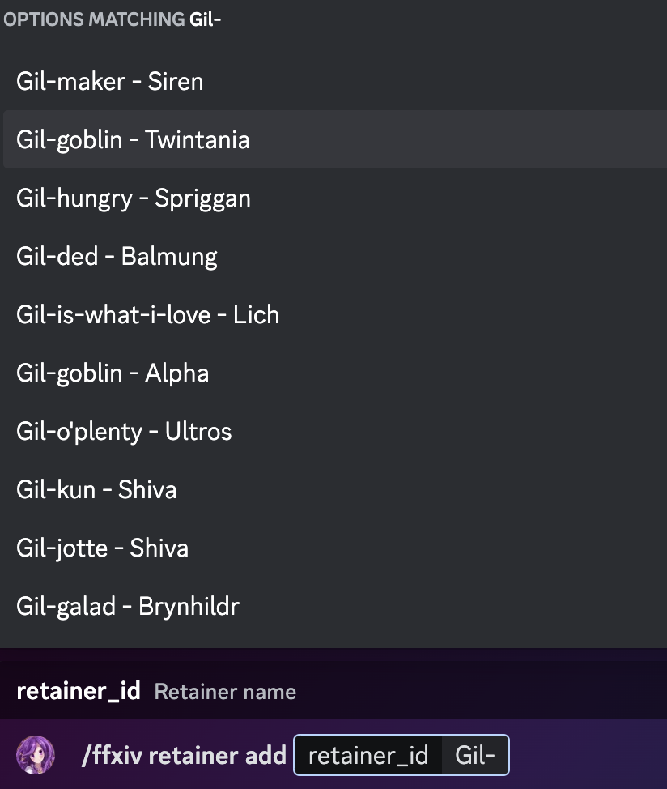
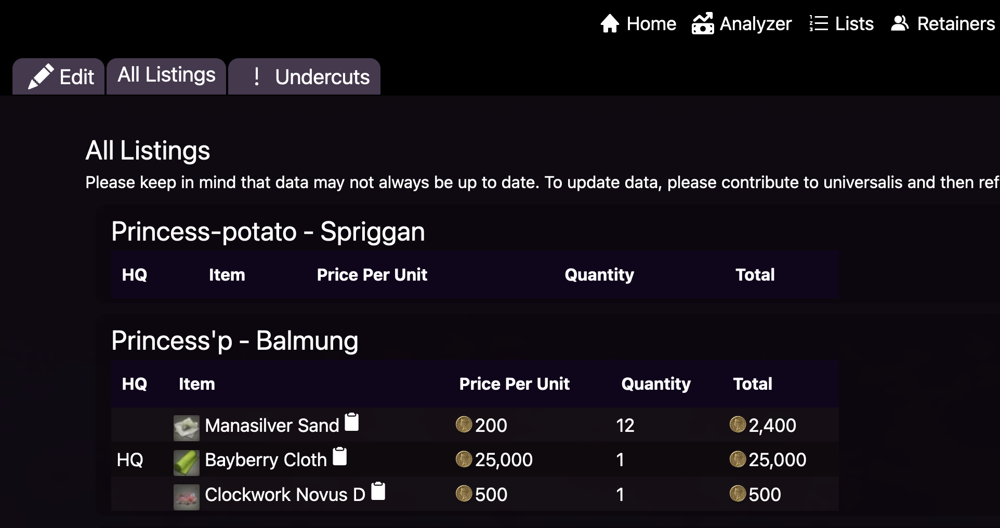
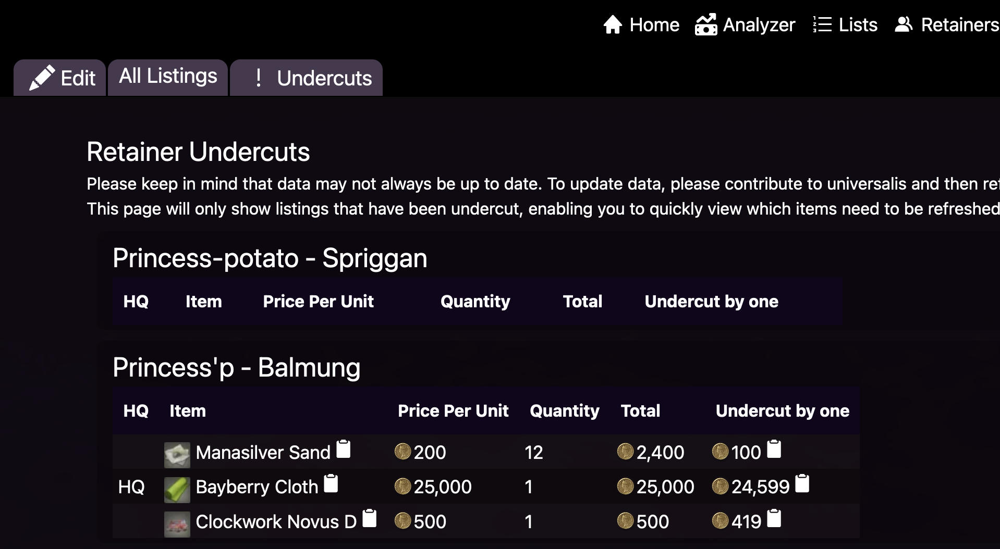
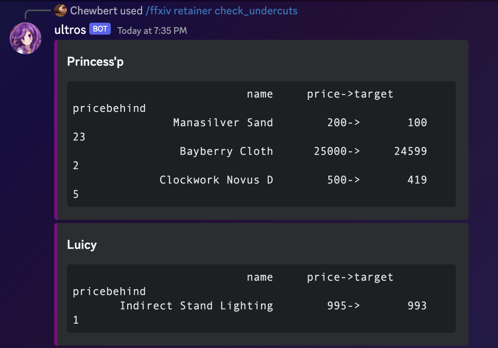
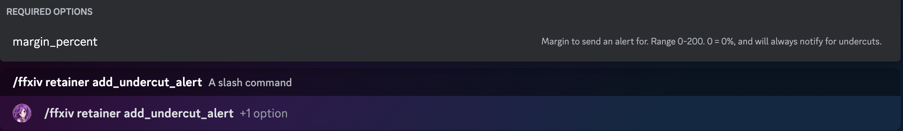
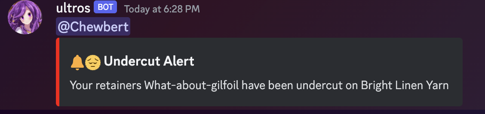

Intro
Ultros is a performant marketboard tool for Final Fantasy 14.
Discord bot
To make the most out of ultros, you should consider inviting the Discord bot. The website is mostly more featured than the bot, except for alerts
Retainers
Ultros is able to track retainers and give a summary. You must be logged into a Discord account.
The website and Discord bot stay in sync, so as long as you use the same account you should be able to view retainers added via the website on the bot, or retainers added via the bot on the website.
Once you add retainers to your account you should be able to view them on the website like this: 
If you're logged in, you can view this page yourself here, or by clicking on the retainers button and then clicking the undercuts button.
Managing retainers
This chapter covers managing retainers via the website and discord.
Using website
Once you're logged into ultros you should be able to join the server. https://ultros.app/retainers/edit
From there- you should be able to see all of the retainers that you have added to your account. in a table and a search bar.
Adding a retainer
Type the name of your retainer into the search box and then click the claim button when the retainer shows up.

Updating retainers
Once you have retainers added, you should see them listed here: 
It is possible to associate a retainer to a specific character, which is why we see "No character" above. Character management is covered here
To reorder the retainers (I highly suggest you match the order of your retainers in game), you may simply drag and drop them.
To remove them, you just need to click unclaim!
Using Discord
Adding a retainer on Discord
In discord, use the command
/ffxiv retainer add retainer_name to add a retainer. As you type the retainer name, the autocomplete should show the name and server of the retainer like this.

make sure you click on the retainer and server that matches yours. Typing th complete name won't work- it must be chosen from the autocomplete list.
Remove
/ffxiv retainer remove
List
You can check the list of all of your retainers with
/ffxiv retainer list
Tracking retainers
Once you've gotten retainers, you should now be able to view their listings that Ultros is aware of.
Website
The website should be fairly intuitive. Just click on retainers, and then all listings and you should see this page.

This page shows all of the listings that are currently known to Ultros that belong to your retainer. This likely won't match what your retainer sees in game, but this should match what people searching Universalis and Ultros should see.
The more useful page is the undercuts page which shows just the listings that your retainer has been undercut on.

The undercut by one option shows the lowest price minus one, thus is the price you need to be the cheapest on the marketboard.
Any listings that aren't undercut aren't available on this page.
Discord
ffxiv retainer check_listingswill show all of your retainer's listings/ffxiv retainer check_undercutswill show just the listings that you've been undercut on. 
Retainer Undercut Alerts
Ultros is able to send a Discord message to a channel whenever one of your retainers gets undercut. The bot must be added to your Discord server, so ensure you've invited the bot
Adding alerts to a channel
Currently ultros only supports alerting via Discord.
Once you've added retainers to your account, you can request to get alerts from the bot using /ffxiv retainer add_undercut_alert
If you have the bot in the server you're in, it should look something like this: 
Once you use this command in a Discord channel- it should send an alert similar to this to that channel.
By default, alerts will mention you and look like this 
Turning alerts off
To remove alerts from a channel, you may use the /ffxiv retainer remove_undercut_alert command to stop alerts from being sent to a channel
Data notice
Ultros relies on Universalis for data- and might not be always up to date. If you are at the retainer bell and check your retainer's related prices, it will remove the listing from Universalis and thus Ultros as well. If you need the listing to show up immediately, you should check the marketboard without using the retainer bell.
In order to update Ultros' data, you should contribute to Universalis.